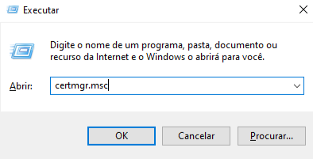
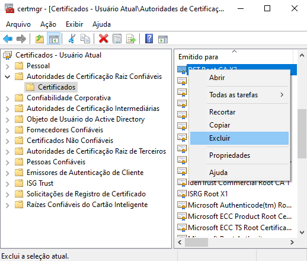
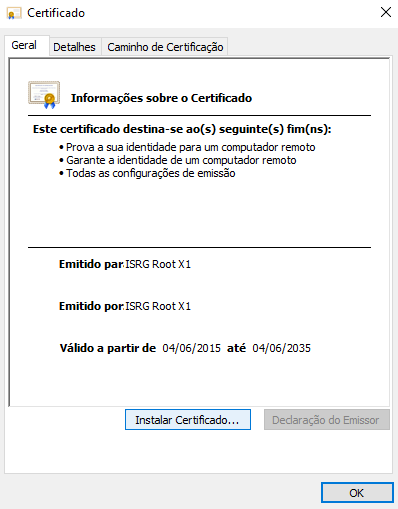
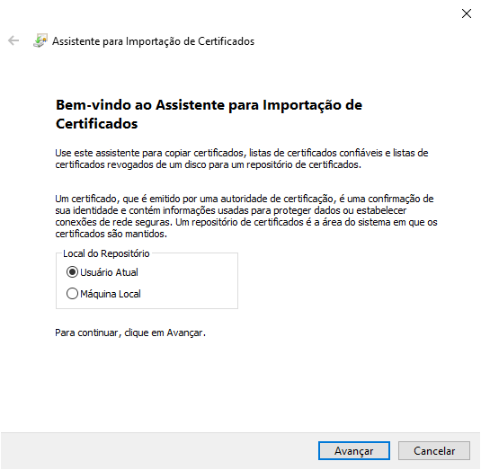
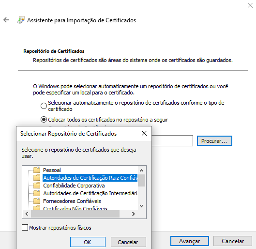
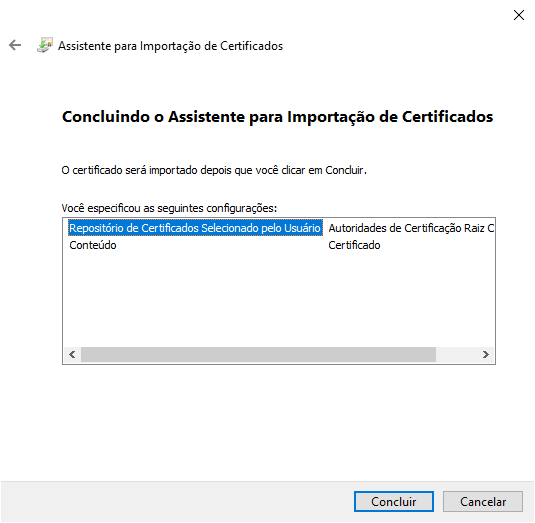
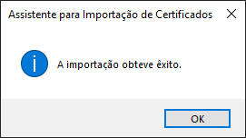

Satoshi Yamazaki
Primeiro, baixe o arquivo "isrgrootx1.der" do site Letsencrypt clicando AQUI.
(Obs.:Este arquivo .der é um certificado SSL que substitui o certificado que se expirou dia 30/09/2021 o DST root CA X3.)
Segundo, acesse o executar do Windows(Win+R), digite o comando "certmgr.msc" e clique em "OK". Se abrirá uma janela no console.

Terceiro, ache a opção "Autoridades de Certificação Raiz Confiáveis" no canto esquerdo da janela e entre nos "Certificados".
Ache o certificado "DST root CA X3", clique com o botão direito do mouse sobre ele e o exclua.

Quarto, vá até onde está baixado o arquivo "isrgrootx1.der" e o execute.
Na janela que se abrirá, clique em "Instalar Certificado...".

Clique em "Avançar" e na próxima página,

selecione a opção "Colocar todos os certificados no repositório a seguir", em seguida clique em "procurar...",
na nova janela selecione a opção "Autoridades de Certificação Raiz Confiáveis" e clique em "OK". Em seguida clique em "Avançar"

na próxima página clique em "Concluir".

Se abrirá então uma nova janela confirmando que a importação do certificado foi concluída com sucesso, clique em "OK".

Quinto, se o seu navegador ainda estiver aberto, feche-o e em seguida abra-o novamente e tente entrar no site onde houve o erro.
Se todos os passos foram seguidos corretamente e não houve nenhum erro, o site deve se abrir normalmente.
Pronto agora seu certificado SSL está atualizado até 2035.
(Obs.: Este método funciona em praticamente todos os casos, caso não funcione, pesquise outra solução.)